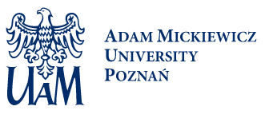
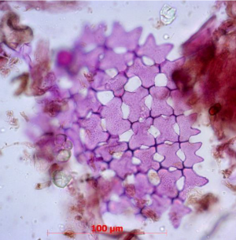
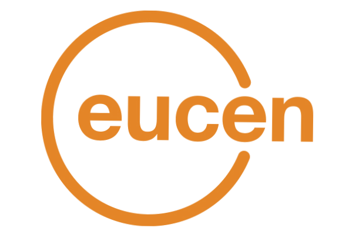

<!DOCTYPE html>
<html lang="en">
    <head>
        <meta charset="utf-8">
        <title>Adam Mickiewicz University, Poznan, Poland</title>
        <link rel="stylesheet" href="styles.css">
        <link rel="stylesheet" href="https://cdnjs.cloudflare.com/ajax/libs/font-awesome/6.1.1/css/all.min.css">
        <link rel="stylesheet" href="https://maxcdn.bootstrapcdn.com/bootstrap/3.3.7/css/bootstrap.min.css">
    </head>
</html>
<body>
   <header>
        <div class="interact">
            <div class="buttons size">
                <span class="btn s">A</span>
                <span class="btn m">A</span>
                <span class="btn l">A</span>
            </div>
            <div class="contrast">
                <a href="#">
                    <i class="glyphicon glyphicon-adjust"></i>
                </a>
            </div>
            <div class="lang">
                <span>EN</span>
                <i class="fa fa-sort-desc"></i>
                <div class="lang-dropdown">
                    <div class="dropdown-lang-content">
                        <span>PL</span>
                        <span>EN</span>
                    </div>
                </div>
            </div>
            <form action="">
                <input type="text" placeholder="Enter a phrase..." name="search">
                <button>
                    <i class="fa fa-search"></i>
                </button>
            </form>
        </div>
        <div class="logos">
            <div class="logos-1">
                
                <a href="https://amu.edu.pl/en">
                    
                </a>
            </div>
            <div class="logos-2">
                <a href="http://epicur.amu.edu.pl/english">
                    
                </a>
                <a href="https://uczelniabadawcza.amu.edu.pl/en">
                    
                </a>
                <a href="https://amu.edu.pl/en/research/hr-excellence-in-research">
                    
                </a>
            </div>
        </div>
   </header>
   <div class="menu-container">
        
        <ul class="menu">
            <li class="dropdown"> <a href="https://amu.edu.pl/en/main-page">ABOUT AMU</a> 
                <ul class="dropdown-content">
                    <li><a href="https://amu.edu.pl/en/main-page/news-and-events">News and events</a></li>
                    <li><a href="https://amu.edu.pl/en/main-page/amu-authorities">AMU Authorities</a></li>
                    <li><a href="https://amu.edu.pl/en/main-page/online-welcome-center">Welcome Center</a></li>
                    <li><a href="https://amu.edu.pl/en/main-page/facts-and-figures">Facts and Figures</a></li>
                    <li><a href="https://amu.edu.pl/en/main-page/amu-directory">AMU Directory</a></li>
                    <li><a href="https://amu.edu.pl/en/main-page/amu-mission-statement-and-important-documents">Mission Statement and Documents</a></li>
                    <li><a href="https://amu.edu.pl/en/main-page/history">AMU History</a></li>
                    <li><a href="https://amu.edu.pl/en/main-page/contact">Contact</a></li>
                </ul>
            </li>
            <li class="dropdown"><a href="https://amu.edu.pl/en/admissions">ADMISSIONS</a>
                <ul class="dropdown-content">
                    <li><a href="https://amu.edu.pl/en/admissions/why-amu">Why AMU?</a></li>
                    <li><a href="https://amu.edu.pl/en/admissions/bachelor-degree-programs">Bachelor Degree Programs</a></li>
                    <li><a href="https://amu.edu.pl/en/admissions/master-degree-programs">Master Degree Programs</a></li>
                    <li><a href="https://amu.edu.pl/en/admissions/joint-degree-programs">Joint Degree Programs</a></li>
                    <li><a href="https://amu.edu.pl/en/admissions/tuition-fees">Tuition Fees</a></li>
                    <li><a href="https://amu.edu.pl/en/admissions/scholarships">Scholarships</a></li>
                    <li><a href="https://amu.edu.pl/en/admissions/recruitment-schedule">Recruitment Schedule</a></li>
                    <li><a href="https://amu.edu.pl/en/admissions/full-study-programs-online-enrollment-system">Step by Step - Online Enrollment System</a></li>
                    <li><a href="https://amu.edu.pl/en/admissions/short-study-programs">Short Study Programs (AMU-PIE)</a></li>
                    <li><a href="https://amu.edu.pl/en/admissions/summer-schools">Summer Schools</a></li>
                </ul>
            </li>
            <li class="dropdown"><a href="https://amu.edu.pl/en/education">STUDENTS</a>
                <ul class="dropdown-content">
                    <li><a href="https://amu.edu.pl/en/education/student-intarnet">Student Intranet</a></li>
                    <li><a href="https://amu.edu.pl/en/education/academic-calendar">Academic Calendar</a></li>
                    <li><a href="https://amu.edu.pl/en/education/languages-at-amu2">Languages at AMU</a></li>
                    <li><a href="https://amu.edu.pl/en/education/amu-dormitories">AMU Dormitories</a></li>
                    <li><a href="https://amu.edu.pl/en/education/campuses">Campuses</a></li>
                    <li><a href="https://amu.edu.pl/en/education/sport-facilities">Sports</a></li>
                    <li><a href="https://amu.edu.pl/en/education/career">Career</a></li>
                    <li><a href="https://amu.edu.pl/en/education/healthcare">Healthcare</a></li>
                    <li><a href="https://amu.edu.pl/en/education/school-of-polish-language-and-culture-for-foreign-students">School of Polish Language and Culture for Foreign Students</a></li>
                </ul>
            </li>
            <li class="dropdown"><a href="https://amu.edu.pl/en/doktoranci">PHD STUDENTS</a>
                <ul class="dropdown-content">
                    <li><a href="https://amu.edu.pl/en/doktoranci/doctoral-schools">Doctoral Schools</a></li>
                    <li><a href="https://amu.edu.pl/en/doktoranci/doctoral-studies">Doctoral Studies</a></li>
                </ul>
            </li>
            <li class="dropdown"><a href="https://amu.edu.pl/en/research">RESEARCH</a>
                <ul class="dropdown-content">
                    <li><a href="https://amu.edu.pl/en/research/excellence-initiative-research-university">Excellence Initiative - Research University</a></li>
                    <li><a href="https://amu.edu.pl/en/research/research-at-amu">Research at AMU</a></li>
                    <li><a href="https://amu.edu.pl/en/research/amu-research-portal">AMU Research Portal</a></li>
                    <li><a href="https://amu.edu.pl/en/research/projects-and-researchers">Projects and Researchers</a></li>
                    <li><a href="https://amu.edu.pl/en/research/conferences-and-events">Conference and Events</a></li>
                    <li><a href="https://amu.edu.pl/en/research/research-centres-and-labs">Research Centres and Labs</a></li>
                    <li><a href="https://amu.edu.pl/en/research/bilingualism-matters">Bilingualism Matters</a></li>
                    <li><a href="https://amu.edu.pl/en/research/scientific-journals">Scientific Journals</a></li>
                    <li><a href="https://amu.edu.pl/en/research/cooperation-and-job-offer">Researchers Job Offers</a></li>
                    <li><a href="https://amu.edu.pl/en/research/project-support-centre">Project Support Centre</a></li>
                    <li><a href="https://amu.edu.pl/en/research/hr-excellence-in-research">HR Excellence in Research</a></li>
                </ul>
            </li>
            <li class="dropdown"><a href="https://amu.edu.pl/en/outreach">OUTREACH</a>
                <ul class="dropdown-content">
                    <li><a href="https://amu.edu.pl/en/outreach/epicur-european-university">EPICUR - European University</a></li>
                    <li><a href="https://amu.edu.pl/en/outreach/erasmus">Erasmus</a></li>
                    <li><a href="https://amu.edu.pl/en/outreach/billateral-agreements-and-exchange-programs">Bilateral Agreements and Exchange Programs</a></li>
                    <li><a href="https://amu.edu.pl/en/outreach/university-engaged">University Engaged</a></li>
                    <li><a href="https://amu.edu.pl/en/outreach/science-communication">Science Communication</a></li>
                    <li><a href="https://amu.edu.pl/en/outreach/rankings">Rankings</a></li>
                </ul>
            </li>
            <li class="dropdown"><a href="https://amu.edu.pl/en/solidarity-with-ukraine">SOLIDARITY WITH UKRAINE</a>
                <ul class="dropdown-content">
                    <li><a href="https://amu.edu.pl/en/solidarity-with-ukraine/find-out-more">Find out more</a></li>
                    <li><a href="https://amu.edu.pl/en/solidarity-with-ukraine/in-solidarity-with-ukraine-news">In solidarity with Ukraine - news</a></li>
                </ul>
            </li>
        </ul>
        
   </div>
   <div class="section-one-container">
        <div class="section-one">
            <div class="setup one">
                <div class="about">
                    <h2>EU4Belarus Call for applications for students</h2>
                    <p>Deadline: July 25, 2022</p>
                    <button class="more">READ MORE</button>
                </div>
                
            </div>
            <div class="slide-bar">
                <div class="slide-one">EU4Belarus - apply now</div>
                <div class="slide-two">University in Ruins. Scaffolding Futures</div>
                <div class="slide-three">Marie Skłodowska-Curie Postdoctoral Fellowship</div>
                <button class="play"></button>
            </div>
        </div>
   </div>
   <div class="section-two-container">
        <div class="section-two">
            <div class="box-left">
                <h1>Welcome to AMU</h1>
                <div class="line"></div>
                <h5>Adam Mickiewicz University is the major academic institution in Poznań and one of the top Polish universities. Its reputation is 
                    founded on tradition, the outstanding achievements of the faculty and the attractive curriculum. 
                </h5>
                <p>
                    The mission of the University is to advance knowledge through high quality research and teaching in partnership with business, 
                    professions, public services and other research and learning providers. 
                </p>
            </div>
        </div>
   </div>
    <div class="section-three">
        <h5>Events</h5>
        <div class="events">
            <a href="https://amu.edu.pl/en/main-page/online-welcome-center/upcoming-events/23rd-international-congress-of-historical-sciences">
                <div class="event-one">
                    
                    <p>21 august 2022</p>
                    <div class="line"></div>
                    <p><strong>23rd Internation Congress of Historical Sciences</strong></p>
                </div>
            </a>
            <a href="https://amu.edu.pl/en/main-page/online-welcome-center/upcoming-events/9th-workshop-on-non-pollen-palynomorphs">
                <div class="event-two">
                    
                    <p>25 september 2022</p>
                    <div class="line"></div>
                    <p><strong>9th Workshop on Non-Pollen Palynomorphs</strong></p>
                </div>
            </a>
            <a href="https://amu.edu.pl/en/main-page/online-welcome-center/upcoming-events/8th-central-european-conference-on-regional-science">
                <div class="event-three">
                    
                    <p>21 november 2022</p>
                    <div class="line"></div>
                    <p><strong>8th Central European Conference on Regional Science</strong></p>
                </div>
            </a>
        </div>
        <div class="button-eve">
            <button class="more">READ MORE</button>
        </div>
        
    </div>
    <div class="section-four-container">
        <div class="section-four">
            <div class="box-left">
                <h1>The University</h1>
                <div class="line"></div>
                <h5>It is a centre of academic excellence where research and teaching are mutually sustaining, 
                    and where the context within which research is conducted and knowledge is sought and applied is international as much as regional and national. 
                </h5>
                <p>
                    The University continuously extends and updates research programs and contents of study curricula, with a special emphasis on
                    their interdisciplinary and international nature. 613 projects are currently being carried out by international and national research teams. 
                </p>
                <div class="box">
                    <p style="font-size: 48px;">613</p>
                    <p style="font-weight: 600;">RESEARCH PROJECTS</p>
                </div>
            </div>
        </div>
    </div>
    <div class="section-five">

    </div>
    <div class="section-six-container">
        <div class="section-six">
            <div class="box-left">
                <h1>Study at AMU</h1>
                <div class="line"></div>
                <h5>
                    The University is organized into 20 Faculties where mostly training-through-research is offered together with high quality supervision according to 
                    the HRS4R policy adopted at AMU. Each fellow may take advantage of the supervisor’s experience or contacts.
                </h5>
                <p>
                    AMU has received the "HR Excellence in Research" award and has implemented the principles of the European Charter for Researchers and the 
                    Code of Conduct for the Recruitment of Researchers.
                </p>
            </div>
        </div>
    </div>
    <div class="section-seven">
        <div class="seven-a">
            <a href="https://amu.edu.pl/en/education">Study Programs</a>
            <a href="https://amu.edu.pl/en/main-page/apply-now">Apply NOW</a>
            <a href="https://amu.edu.pl/en/outreach/erasmus">Erasmus +</a>
            <a href="https://amu.edu.pl/en/outreach/billateral-agreements-and-exchange-programs">Short time bilateral exchange</a>
        </div>
        <div class="seven-b">
            <a href="https://eua.eu/">
                
            </a>
            <a href="https://www.euprio.eu/">
                
            </a>
            <a href="https://www.auf.org/">
                
            </a>
            <a href="http://www.eucen.eu/">
                
            </a>
        </div>
        <div class="seven-c">
            <a href="https://web.gcompostela.org/">
                
            </a>
            <a href="http://www.magna-charta.org/about-us">
                
            </a>
            <a href="https://sgroup-unis.eu/">
                
            </a>
            <a href="https://eosc.eu/">
                
            </a>
        </div>
        <div class="social">
            <p>FIND US ON SOCIAL MEDIA!</p>
            <div class="duo">
                <a href="#">
                    <i class="fab fa-facebook"></i>
                </a>
                <a href="#">Facebook</a>
            </div>
            <div class="duo">
                <a href="#">
                    <i class="fab fa-instagram"></i>
                </a>
                <a href="#">Instagram</a>
            </div>
            <div class="duo">
                <a href="#">
                    <i class="fab fa-youtube"></i>
                </a>
                <a href="#">YouTube</a>
            </div>
            <div class="duo">
                <a href="#">
                    <i class="fa fa-address-card"></i>
                </a>
                <a href="#">UAM.TV</a>
            </div>
            <div class="duo">
                <a href="#">AMU Shop</a>
            </div>
            <div class="duo">
                <a href="#">
                    <i class="fa fa-rss"></i>
                </a>
                <a href="#">rss</a>
            </div>
            <div class="duo">
                <a href="#">
                    <i class="fa fa-archive"></i>
                </a>
                <a href="#">bip</a>
            </div>
        </div>
    </div>
    <div class="footer-container">
        <footer>

        </footer>
    </div>
</body>